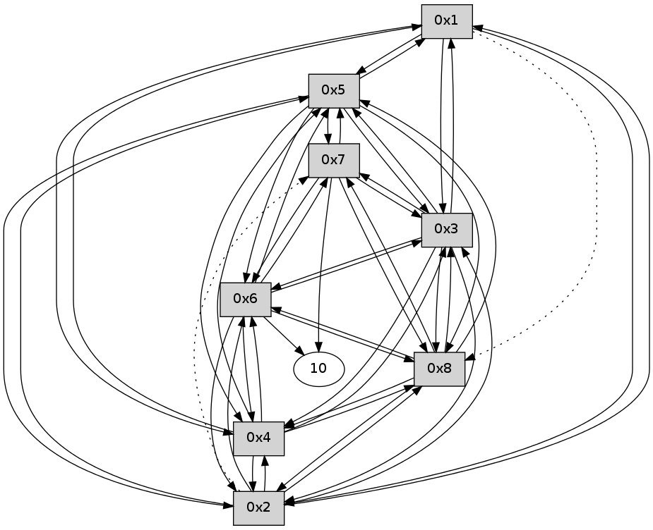

>> << IDX [start] -100 -25 -5 +0 +5 +25 +100 [115.190315008]
 Previous packets
----------------------------------------------------------------------
110.461482 beacon01(11f6) #0 coord=01,02,03,04,05,06,07,08,0a,09 cycle=688.0ms assoc
-- color-indic=0 64 0c f4
110.471637 beacon02(11f6) #0 coord=01,02,03,04,05,06,07,08,0a,09 cycle=688.0ms assoc 64 9f c5
110.481617 beacon03(11f6) #0 coord=01,02,03,04,05,06,07,08,0a,09 cycle=688.0ms assoc 64 e5 88
110.491617 beacon04(11f6) #0 coord=01,02,03,04,05,06,07,08,0a,09 cycle=688.0ms assoc 64 92 62
110.501618 beacon05(11f6) #0 coord=01,02,03,04,05,06,07,08,0a,09 cycle=688.0ms assoc 64 e8 2f
110.511618 beacon06(11f6) #0 coord=01,02,03,04,05,06,07,08,0a,09 cycle=688.0ms assoc 64 66 f8
110.521618 beacon07(11f6) #0 coord=01,02,03,04,05,06,07,08,0a,09 cycle=688.0ms assoc 64 1c b5
110.531622 beacon08(11f6) #0 coord=01,02,03,04,05,06,07,08,0a,09 cycle=688.0ms assoc 64 99 24
110.571851 [Hello(5): seq=17 sym=1,2,7,6,3,8,4 sysInfo= stat=1:1,0,0,0/2:15,0,0,0/7:14,0,0,0/6:15,0,0,0/3:0,0,0,0/8:0,0,0,0/4:15,0,0,0]
110.595108 [Hello(3): seq=17 sym=1,2,5,6,8,4 asym=7 sysInfo= stat=1:1,0,0,0/2:15,0,0,0/5:0,0,0,0/6:15,0,0,0/8:0,0,0,0/4:0,0,0,0/7:14,0,0,0]
110.631081 [Hello(6): seq=17 sym=10,7,5,3,8,4,2 sysInfo= stat=10:0,0,0,0/7:15,0,0,0/5:14,0,0,0/3:0,0,0,0/8:0,0,0,0/4:15,0,0,0/2:9,0,0,0]
110.637855 [Hello(8): seq=17 sym=2,7,5,6,3,4 sysInfo= stat=2:15,0,0,0/7:14,0,0,0/5:15,0,0,0/6:1,0,0,0/3:0,0,0,0/4:15,0,0,0]
110.658048 [Hello(7): seq=17 sym=10,5,6,8,3 sysInfo= stat=10:0,0,0,0/5:15,0,0,0/6:1,0,0,0/8:1,0,0,0/3:1,0,0,0]
110.661812 [Hello(4): seq=17 sym=1,2,5,6,3,8 sysInfo= stat=1:1,0,0,0/2:15,0,0,0/5:0,0,0,0/6:0,0,0,0/3:1,0,0,0/8:1,0,0,0]
110.690535 [Hello(2): seq=17 sym=1,5,3,8,4,6 asym=7 sysInfo= stat=1:1,0,0,0/5:0,0,0,0/3:1,0,0,0/8:1,0,0,0/4:0,0,0,0/6:14,0,0,0/7:15,0,0,0]
----------------------------------------------------------------------
111.249618 beacon01(11f6) #0 coord=01,02,03,04,05,06,07,08,0a,09 cycle=688.0ms assoc
-- color-indic=0 64 38 ec
111.259789 beacon02(11f6) #0 coord=01,02,03,04,05,06,07,08,0a,09 cycle=688.0ms assoc 64 ab dd
111.269753 beacon03(11f6) #0 coord=01,02,03,04,05,06,07,08,0a,09 cycle=688.0ms assoc 64 d1 90
111.279754 beacon04(11f6) #0 coord=01,02,03,04,05,06,07,08,0a,09 cycle=688.0ms assoc 64 a6 7a
111.289753 beacon05(11f6) #0 coord=01,02,03,04,05,06,07,08,0a,09 cycle=688.0ms assoc 64 dc 37
111.299753 beacon06(11f6) #0 coord=01,02,03,04,05,06,07,08,0a,09 cycle=688.0ms assoc 64 52 e0
111.309755 beacon07(11f6) #0 coord=01,02,03,04,05,06,07,08,0a,09 cycle=688.0ms assoc 64 28 ad
111.319759 beacon08(11f6) #0 coord=01,02,03,04,05,06,07,08,0a,09 cycle=688.0ms assoc 64 ad 3c
111.359381 0006 -- MAC-command=22 payload=00 21 2e ff ff 00 54 a9 02 0a 00 06 00 2c 83
111.363004 0001 -- MAC-command=23 payload=00 21 2e ff ff 00 54 a9 09 00 00 01 0a 00 e9 f4
111.365492 0006 -- MAC-command=23 payload=00 21 2e ff ff 00 54 a9 09 00 00 00 65 8e
111.475435 [Hello(1): seq=18 sym=5,3,2,4 asym=8 sysInfo= stat=5:0,0,0,0/3:1,0,0,0/2:15,0,0,0/4:15,0,0,0/8:1,0,0,0]
----------------------------------------------------------------------
112.037754 beacon01(11f6) #0 coord=01,02,03,04,05,06,07,08,0a,09 cycle=688.0ms assoc
-- color-indic=0 64 40 e7
112.047922 beacon02(11f6) #0 coord=01,02,03,04,05,06,07,08,0a,09 cycle=688.0ms assoc 64 d3 d6
112.057890 beacon03(11f6) #0 coord=01,02,03,04,05,06,07,08,0a,09 cycle=688.0ms assoc 64 a9 9b
112.067889 beacon04(11f6) #0 coord=01,02,03,04,05,06,07,08,0a,09 cycle=688.0ms assoc 64 de 71
112.077890 beacon05(11f6) #0 coord=01,02,03,04,05,06,07,08,0a,09 cycle=688.0ms assoc 64 a4 3c
112.087890 beacon06(11f6) #0 coord=01,02,03,04,05,06,07,08,0a,09 cycle=688.0ms assoc 64 2a eb
112.097889 beacon07(11f6) #0 coord=01,02,03,04,05,06,07,08,0a,09 cycle=688.0ms assoc 64 50 a6
112.107895 beacon08(11f6) #0 coord=01,02,03,04,05,06,07,08,0a,09 cycle=688.0ms assoc 64 d5 37
112.154417 [Hello(6): seq=18 sym=10,7,5,3,8,4,2 sysInfo= stat=10:0,0,0,0/7:0,0,0,0/5:14,0,0,0/3:0,0,0,0/8:1,0,0,0/4:0,0,0,0/2:10,0,0,0]
112.180392 [Hello(3): seq=18 sym=1,2,7,5,6,8,4 sysInfo= stat=1:2,0,0,0/2:0,0,0,0/7:15,0,0,0/5:0,0,0,0/6:1,0,0,0/8:1,0,0,0/4:1,0,0,0]
112.212460 [Hello(2): seq=18 sym=1,5,3,8,4,6 asym=7 sysInfo= stat=1:2,0,0,0/5:0,0,0,0/3:2,0,0,0/8:1,0,0,0/4:0,0,0,0/6:15,0,0,0/7:15,0,0,0]
112.216254 [Hello(8): seq=18 sym=2,7,5,6,3,4 sysInfo= stat=2:0,0,0,0/7:15,0,0,0/5:15,0,0,0/6:2,0,0,0/3:1,0,0,0/4:0,0,0,0]
112.224414 [Hello(5): seq=18 sym=1,2,7,6,3,8,4 sysInfo= stat=1:2,0,0,0/2:1,0,0,0/7:15,0,0,0/6:1,0,0,0/3:2,0,0,0/8:2,0,0,0/4:0,0,0,0]
112.266062 [Hello(4): seq=18 sym=1,2,5,6,3,8 sysInfo= stat=1:2,0,0,0/2:1,0,0,0/5:1,0,0,0/6:1,0,0,0/3:2,0,0,0/8:2,0,0,0]
112.271711 [Hello(7): seq=18 sym=10,5,6,8,3 sysInfo= stat=10:1,0,0,0/5:0,0,0,0/6:2,0,0,0/8:2,0,0,0/3:2,0,0,0]
----------------------------------------------------------------------
112.825893 beacon01(11f6) #0 coord=01,02,03,04,05,06,07,08,0a,09 cycle=688.0ms assoc
-- color-indic=0 64 fc e2
112.836061 beacon02(11f6) #0 coord=01,02,03,04,05,06,07,08,0a,09 cycle=688.0ms assoc 64 6f d3
112.846027 beacon03(11f6) #0 coord=01,02,03,04,05,06,07,08,0a,09 cycle=688.0ms assoc 64 15 9e
112.856029 beacon04(11f6) #0 coord=01,02,03,04,05,06,07,08,0a,09 cycle=688.0ms assoc 64 62 74
112.866029 beacon05(11f6) #0 coord=01,02,03,04,05,06,07,08,0a,09 cycle=688.0ms assoc 64 18 39
112.876029 beacon06(11f6) #0 coord=01,02,03,04,05,06,07,08,0a,09 cycle=688.0ms assoc 64 96 ee
112.886030 beacon07(11f6) #0 coord=01,02,03,04,05,06,07,08,0a,09 cycle=688.0ms assoc 64 ec a3
112.896036 beacon08(11f6) #0 coord=01,02,03,04,05,06,07,08,0a,09 cycle=688.0ms assoc 64 69 32
112.958716 [Hello(1): seq=19 sym=5,3,2,4 asym=8 sysInfo= stat=5:1,0,0,0/3:2,0,0,0/2:0,0,0,0/4:0,0,0,0/8:2,0,0,0]
----------------------------------------------------------------------
113.614043 beacon01(11f6) #0 coord=01,02,03,04,05,06,07,08,0a,09 cycle=688.0ms assoc
-- color-indic=0 64 28 d7
113.624221 beacon02(11f6) #0 coord=01,02,03,04,05,06,07,08,0a,09 cycle=688.0ms assoc 64 bb e6
113.634178 beacon03(11f6) #0 coord=01,02,03,04,05,06,07,08,0a,09 cycle=688.0ms assoc 64 c1 ab
113.644179 beacon04(11f6) #0 coord=01,02,03,04,05,06,07,08,0a,09 cycle=688.0ms assoc 64 b6 41
113.654180 beacon05(11f6) #0 coord=01,02,03,04,05,06,07,08,0a,09 cycle=688.0ms assoc 64 cc 0c
113.664179 beacon06(11f6) #0 coord=01,02,03,04,05,06,07,08,0a,09 cycle=688.0ms assoc 64 42 db
113.674179 beacon07(11f6) #0 coord=01,02,03,04,05,06,07,08,0a,09 cycle=688.0ms assoc 64 38 96
113.684182 beacon08(11f6) #0 coord=01,02,03,04,05,06,07,08,0a,09 cycle=688.0ms assoc 64 bd 07
113.758053 [Hello(5): seq=19 sym=1,2,7,6,3,8,4 sysInfo= stat=1:3,0,0,0/2:1,0,0,0/7:0,0,0,0/6:1,0,0,0/3:2,0,0,0/8:2,0,0,0/4:1,0,0,0]
113.798358 [Hello(3): seq=19 sym=1,2,7,5,6,8,4 sysInfo= stat=1:3,0,0,0/2:1,0,0,0/7:0,0,0,0/5:2,0,0,0/6:1,0,0,0/8:2,0,0,0/4:2,0,0,0]
113.815678 [Hello(7): seq=19 sym=10,5,6,8,3 sysInfo= stat=10:2,0,0,0/5:1,0,0,0/6:2,0,0,0/8:2,0,0,0/3:3,0,0,0]
113.825013 [Hello(8): seq=19 sym=2,7,5,6,3,4 sysInfo= stat=2:1,0,0,0/7:1,0,0,0/5:1,0,0,0/6:2,0,0,0/3:2,0,0,0/4:1,0,0,0]
113.845063 [Hello(4): seq=19 sym=1,2,5,6,3,8 sysInfo= stat=1:3,0,0,0/2:1,0,0,0/5:2,0,0,0/6:1,0,0,0/3:3,0,0,0/8:3,0,0,0]
113.847638 [Hello(6): seq=19 sym=10,7,5,3,8,4,2 sysInfo= stat=10:2,0,0,0/7:2,0,0,0/5:0,0,0,0/3:2,0,0,0/8:3,0,0,0/4:1,0,0,0/2:11,0,0,0]
113.857138 [Hello(2): seq=19 sym=1,5,3,8,4,6 asym=7 sysInfo= stat=1:3,0,0,0/5:2,0,0,0/3:3,0,0,0/8:3,0,0,0/4:2,0,0,0/6:0,0,0,0/7:1,0,0,0]
----------------------------------------------------------------------
114.402178 beacon01(11f6) #0 coord=01,02,03,04,05,06,07,08,0a,09 cycle=688.0ms assoc
-- color-indic=0 64 94 d2
114.412354 beacon02(11f6) #0 coord=01,02,03,04,05,06,07,08,0a,09 cycle=688.0ms assoc 64 07 e3
114.422313 beacon03(11f6) #0 coord=01,02,03,04,05,06,07,08,0a,09 cycle=688.0ms assoc 64 7d ae
114.432314 beacon04(11f6) #0 coord=01,02,03,04,05,06,07,08,0a,09 cycle=688.0ms assoc 64 0a 44
114.442314 beacon05(11f6) #0 coord=01,02,03,04,05,06,07,08,0a,09 cycle=688.0ms assoc 64 70 09
114.452315 beacon06(11f6) #0 coord=01,02,03,04,05,06,07,08,0a,09 cycle=688.0ms assoc 64 fe de
114.462315 beacon07(11f6) #0 coord=01,02,03,04,05,06,07,08,0a,09 cycle=688.0ms assoc 64 84 93
114.472319 beacon08(11f6) #0 coord=01,02,03,04,05,06,07,08,0a,09 cycle=688.0ms assoc 64 01 02
114.594050 [Hello(1): seq=20 sym=5,3,2,4 asym=8 sysInfo= stat=5:2,0,0,0/3:3,0,0,0/2:1,0,0,0/4:1,0,0,0/8:3,0,0,0]